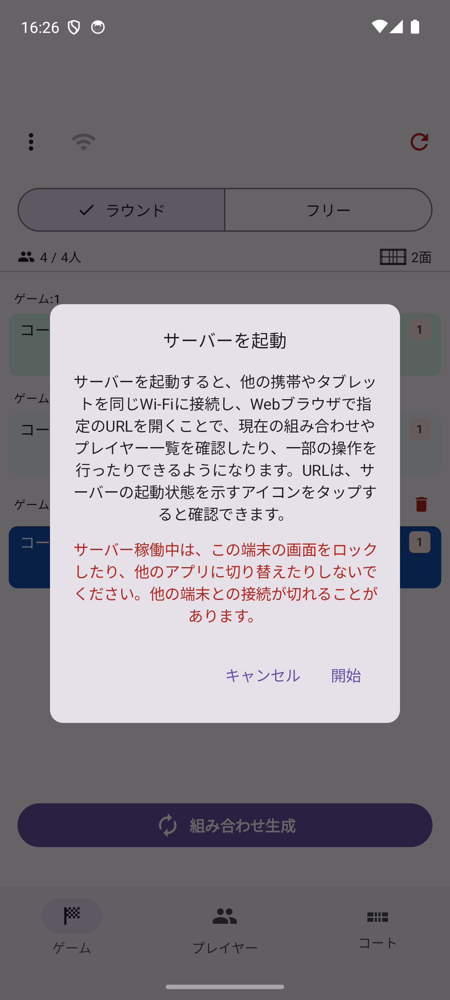
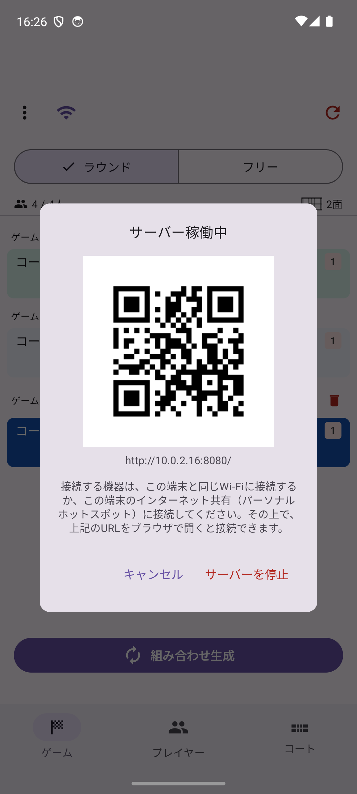

くみあぷを入れた端末（マスター）でサーバーを起動すると、同じ Wi-Fi に接続した他の携帯・タブレットの Web ブラウザから、現在の組み合わせやプレイヤー一覧を見たり、一部の操作を行ったりできます。大会運営スタッフなど、複数人でコート状況を共有したい場合に便利です。普段のゲーム練などでもマスターの端末以外の複数端末から OS に関係なく現在の状況や進行を操作することが可能です。またゲーム練の途中からフリーモードに切り替えてコートごとにレベルを割り振って個別に進行を操作することも可能です。
ゲーム タブ左上の Wi-Fi アイコン（または「⋮」メニューの「サーバーを起動」）をタップします。案内画面が表示されるので、内容を確認して「開始」をタップすると起動します。

接続する端末を、マスター端末と同じ Wi-Fi（またはマスター端末のテザリング）に接続してください。サーバー起動中に Wi-Fi アイコンをタップすると、接続用の URL と QR コードが表示されます。QR コードを読み取るか、URL を直接ブラウザで開いてください。

再度 Wi-Fi アイコンをタップすると、稼働状況の確認画面が開きます。「サーバーを停止」をタップすると停止します。